Get started
Role Center
In order to use Latvian Intrastat Reporting Localization, no specific role center is required, because the functionality can be accessed via search pane, whereas printout buttons are embedded inside ribbon under the tab ACTIONS.
Configuration package import
Basic necessary system setup for the instant use of Latvian Intrastat Reporting Localization is created, when applying the configuration package
Click on the button Search for Page or Report... 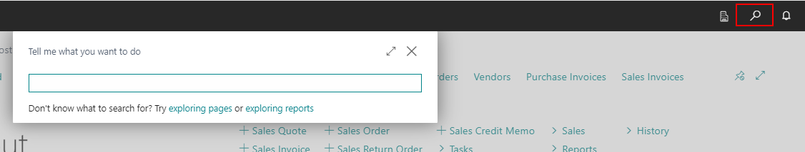
Type Assisted Setup and choose it from Administration tasks 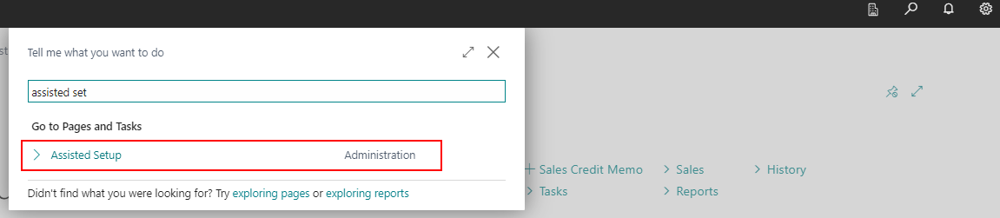
Click on the process Company Setup with Latvian Localization 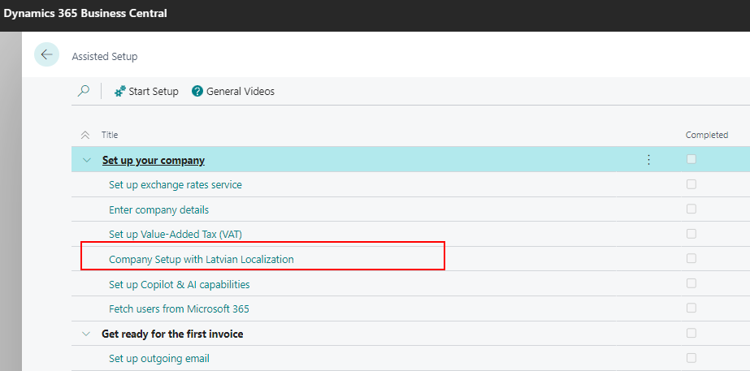
Cick on the button Next up to the section regarding LV Intrastat. Press Import to upload configuration package, and then press Apply to upload configuration package with all necessary setup 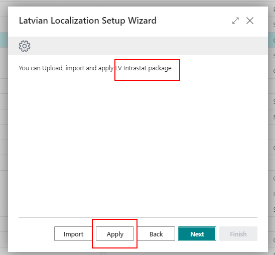
Configuration package ensures the following information:
- Country/Region
- Shipment Method
- Country/Region Translation
- Transaction Type
- Transport Method
- Number Series
- Data Exchange Definitions and it's setup
- Intrastat Report Setup
IMPORTANT! If all the necessary settings for Intrastat have already been done previously, then it is not necessary to load the configuration package, but it is enough just to load in the page Data Exchange Definitions only the file with Data exchange definitions. 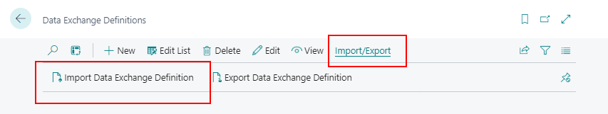
Setup
After applying configuration package of data esxchange definition package, additional setup must be completed:
- Intrastat Report Setup
- Set the Data Exch. Def. Codes, what corresponds to the Intrastat reports to be submitted by your company;
- Specify the employee who will submit the Intrastat reports.
- Employee card. For those employees who submit Intrastat reports, the following information must be filled in on the Employee Card:
- Name, Surname
- Company Phone No.
- Company Email
- Company Information setup must be filled following data:
- Name
- Address
- Post code
- Country/Region Code
- Registration No
- VAT Registration No.
- Item card. Ensure that all item cards, what should be included in Intrastat reporting has following information set:
- Unit of Measure
- Supplementary Unit of Measure (if applicable)
- Net Weight - specify the net weight of the item per Base Unit of Measure
- Gross Weight - specify the gross weight of the item per Base Unit of Measure
- Tariff No. - specify a code for the item's tariff number
- Country/Region of Origin Code - specify a code for the country/region where the item was produced or processed. 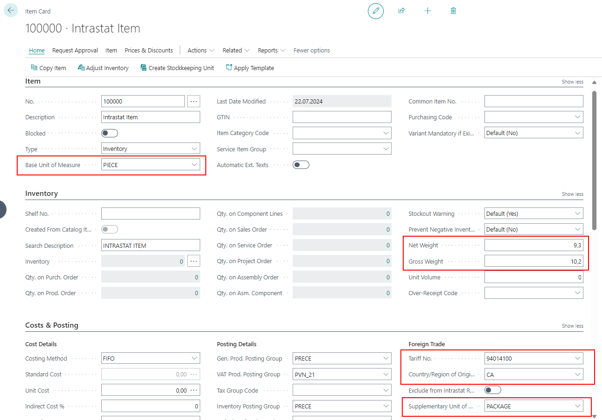
NOTE! Please note that the mandatory fields of the product card should already be filled in to ensure successful receipt and shipment of the product.
- Customer/ Vendor card:
- Country/Region Code 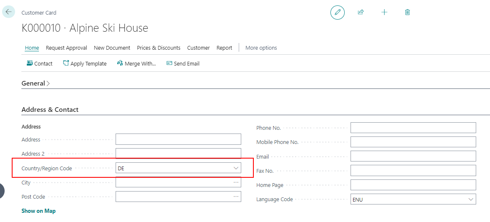 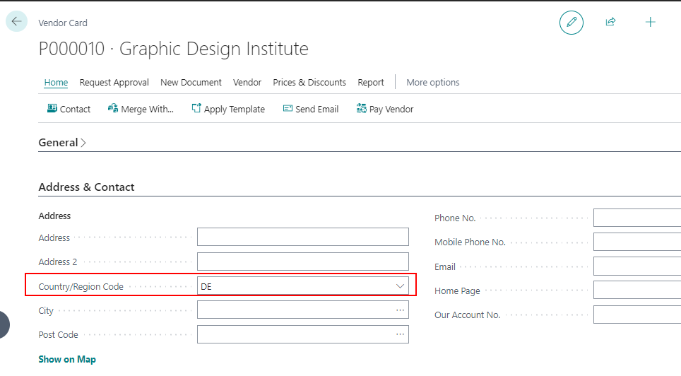
NOTE! Please note that the mandatory fields of the customer's/vendors's card should already be filled in to ensure successful receipt and shipment of the goods. Optionally, the following fields can be filled in:
- Shipment Method Code
- Default Transaction Type
- Default Trans. Type - Returns
- Default Transport Method
How to use?
How to use: Register EU receipts from Purchase Orders/Sales Return Orders/Transfer Orders
Purpose: In order to obtain proper Intrastat Reports, it is required to enter Intrastat required information inside the purchase/sales return/transfer document before posting EU receipt
Availability: In Purchase Orders/Sales Return Orders/Transfer Orders that can be accessed from Search for Page or Report…
Pre-requisites: The following information is required to be completed for the item in Item card before posting item receipt:
- Net Weight
- Gross Weight
- Tariff No.
- Country/Region of Origin Code
The following information is required to be completed for the Customer/Vendor/Location in Customer/Vendor/Location card before posting item receipt:
- Country/Region Code
- VAT registration number
The following information is required to be completed for the document (Purchase Orders/Sales Return Orders/Transfer Orders) before posting item receipt:
- Shipment Method
- Transaction Type
- Transport Method
KHow to use: Register EU shipments from Purchase Return Orders/Sales Orders/Transfer Orders
Purpose: In order to obtain proper Intrastat Reports, it is required to enter Intrastat required information inside the purchase return/sales/transfer document before posting EU shipment
Availability: In Purchase Return Orders/Sales Orders/Transfer Orders that can be accessed from Search for Page or Report…
Pre-requisites: The following information is required to be completed for the item in Item card before posting item shipment:
- Net Weight
- Gross Weight
- Tariff No.
- Country/Region of Origin Code
The following information is required to be completed for the Customer/Vendor/Location in Customer/Vendor/Location card before posting item shipment:
- Country/Region Code
- VAT Registration number
The following information is required to be completed for the document (Purchase Orders/Sales Return Orders/Transfer Orders) before posting item shipment:
- Shipment Method
- Transaction Type
- Transport Method
How to use: Create Intrastat journal, print reports and create files for Central Statistics Bureau
Click on the button Search for Page or Report...

Type and select Intrastat Report List 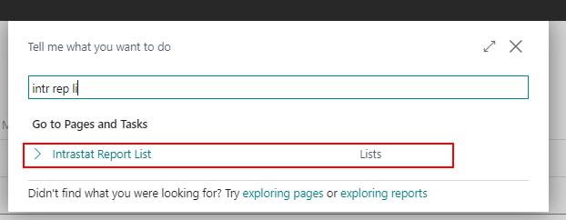
Create a new Intrastat report card 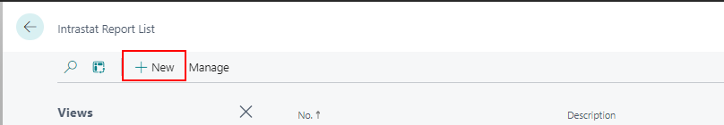
Complete following fields in Intrastat Report card:
- Description - specify a name for the Intrastat journal. For example, "2024 June"
- Statistics Period - specify a statistics reporting period for the Intrastat journal in the format YYMM. For example, "2406". 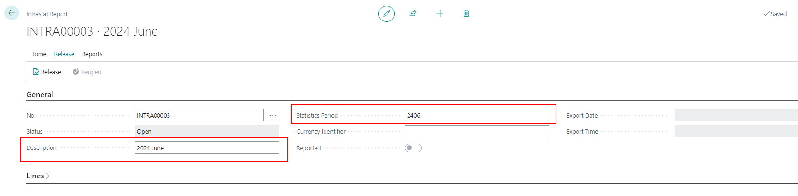
Click on button Suggest Lines... 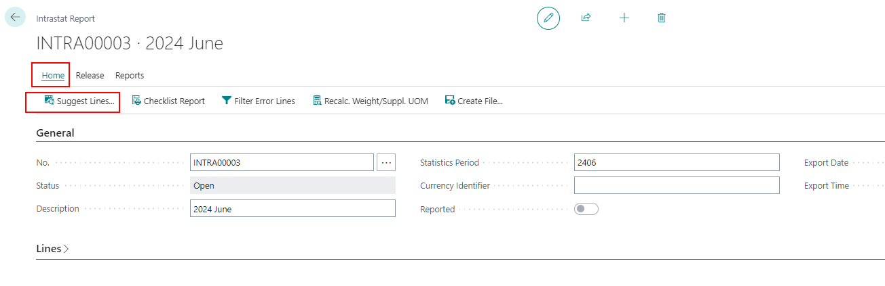
Ensure that in Option window data period is correct and all required filters are selected, and click the buttton OK 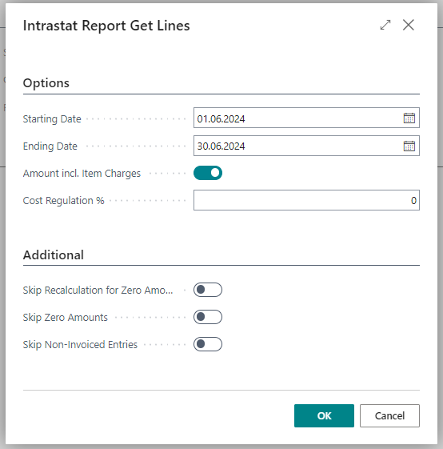
Check the created report lines.
NOTE! The Intrastat report lines can't be created if the Tariff Number has not been entered in the product card and there have been EU exports or EU imports related to the particular product during the prepared statistical reference period. If any information in the lines of the Intrastat report is missing, it can be manually filled in.
Print the report by pressing on the buttton Intrastat Overview (1A,2A,1B,2B) 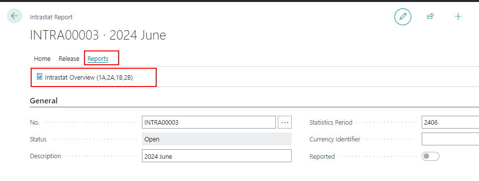
- Report Type - select from the list required report's type:
- Receipt 1A;
- Receipt 1B;
- Shipment 2A;
- Shipment 2B.
- Reporter - choose the responsible employee from the list who submits the report
- Report Type - select from the list required report's type:
Prepare the report file to be uploaded to Central Statistics Bureau by clicking on button Create file... 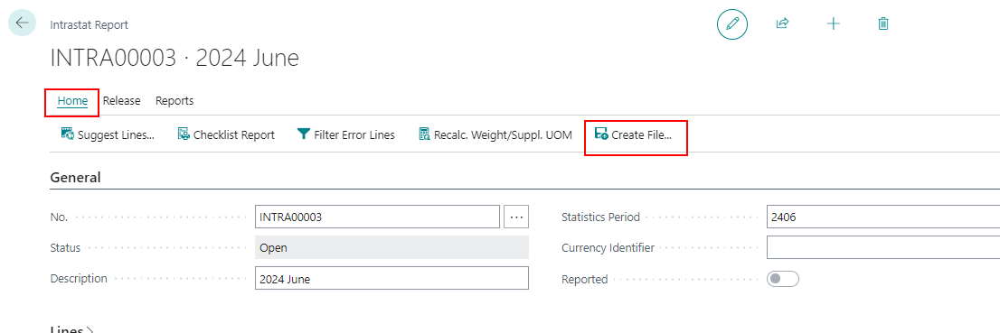 And choose the type of report for which you want to prepare the file: 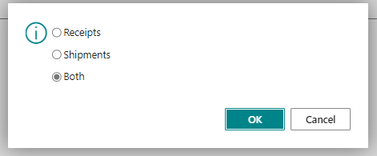
Upload the prepared file to the website of Central Statistics Bureau.